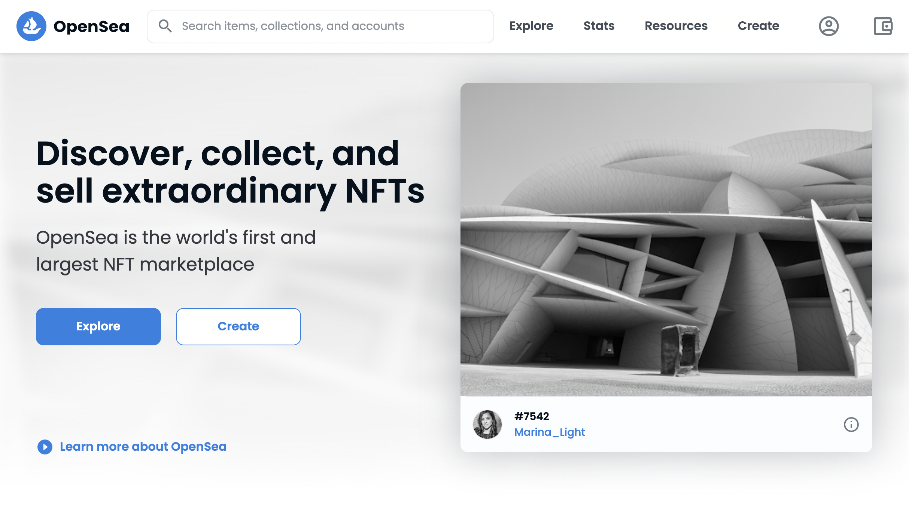
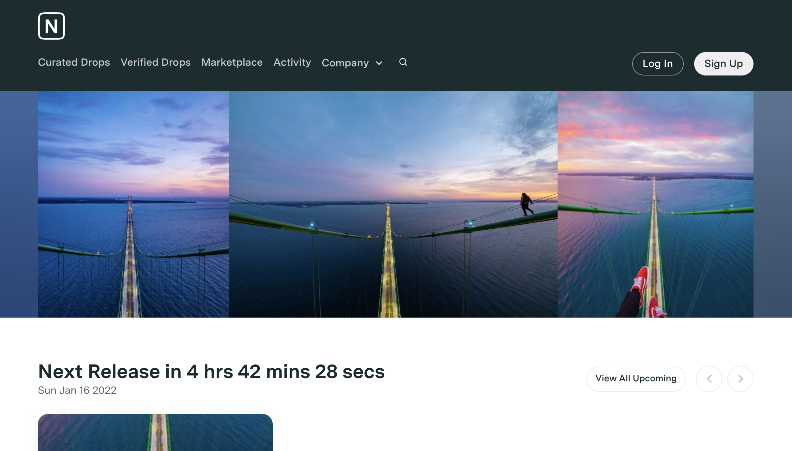
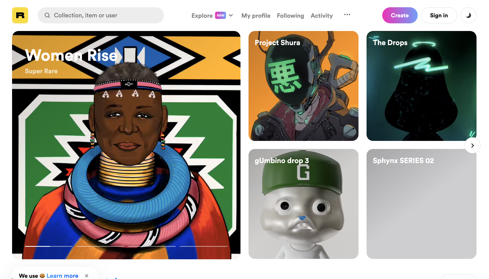

To begin your journey of buying a Non Fungible Token, you must first select a platform, or marketplace, where NFTs can be bought and sold. Popular marketplaces include
OpenSea,
NiftyGateway,
SuperRare, and
Rariable . These marketplaces allow for NFTs to be minted to blockchains, and are typically associated with specific cryptocurrencies.
  
OpenSea, NiftyGateway, and Rariable: popular NFT marketplaces.
In order to participate in the NFT market, you must establish a wallet in your chosen currency. Popular crypto wallet platforms include
Coinbase,
Kraken,
Metamask, and
Exodus. The marketplace platform often determines which currency is used for the NFT process – for popular site OpenSea, transactions are completed through
Ethereum.
In order to purchase NFTs, you must fund your crypto wallet. Crypto wallets can only hold cryptocurrency, but you can purchase cryptocurrency through a cryptocurrency exchange, which will allow you to use your credit card or bank details to purchase cryptocurrency.
Once funded, you can locate NFTs in the marketplace to purchase. Most NFTs are sold through a timed auction with a price minimum set by the creator, but marketplaces also allow for a listed single price available for the first buyer. In an NFT auction, if you are the highest bidder, the NFT will now be yours and the bid amount will be debited from your wallet, along with a commission fee from the marketplace.
Now that you are an NFT owner, you can list your own NFT for sale - through an auction or single price sale. Much of the wealth obtained through the NFT market comes from the resale of valuable NFTs.
Happy NFT selling!